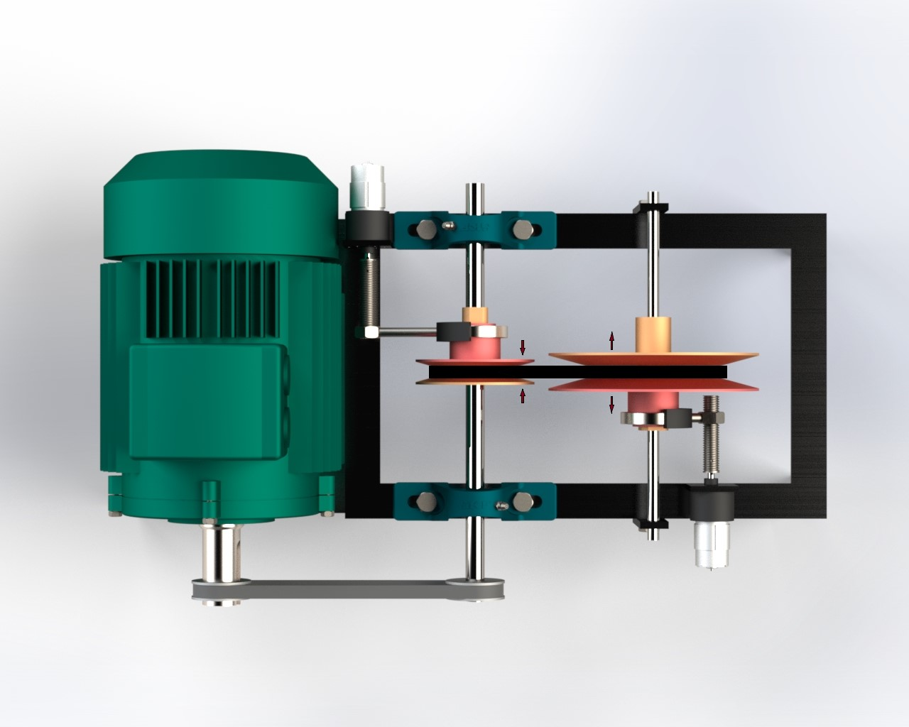
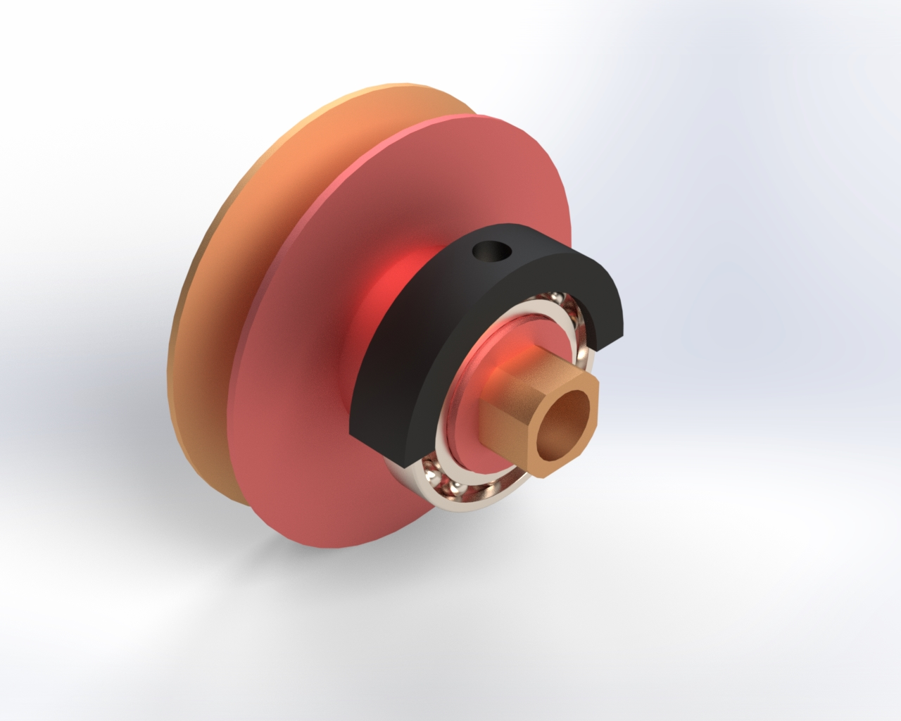
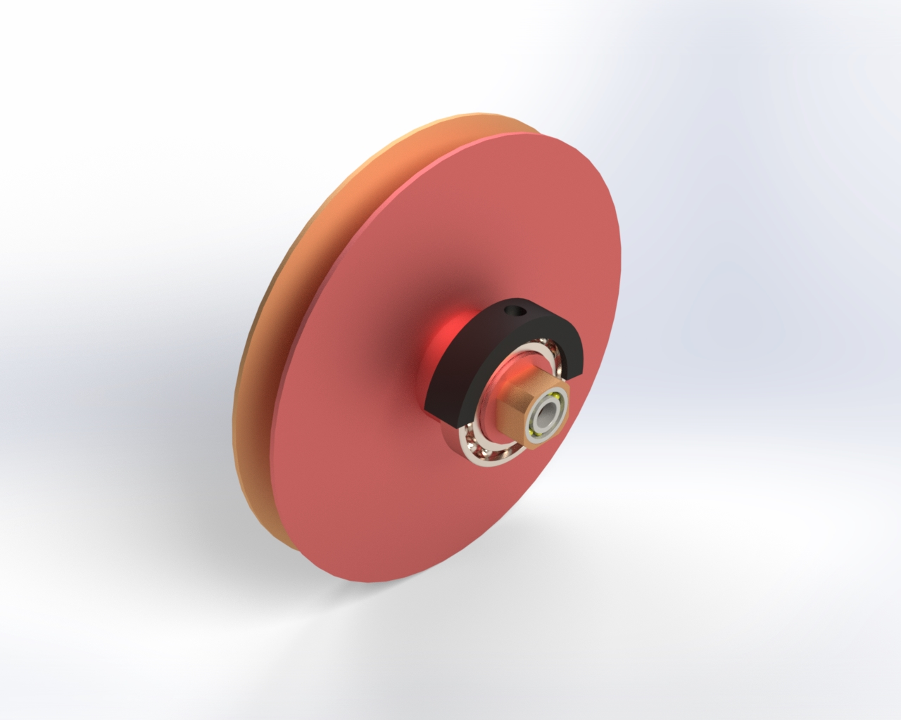
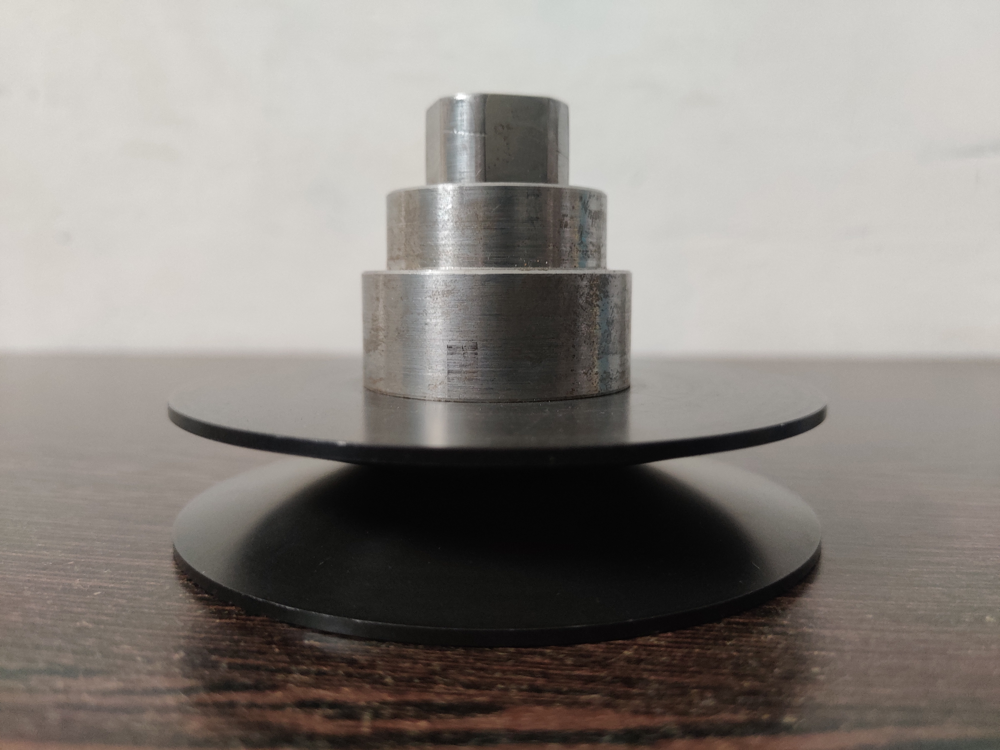
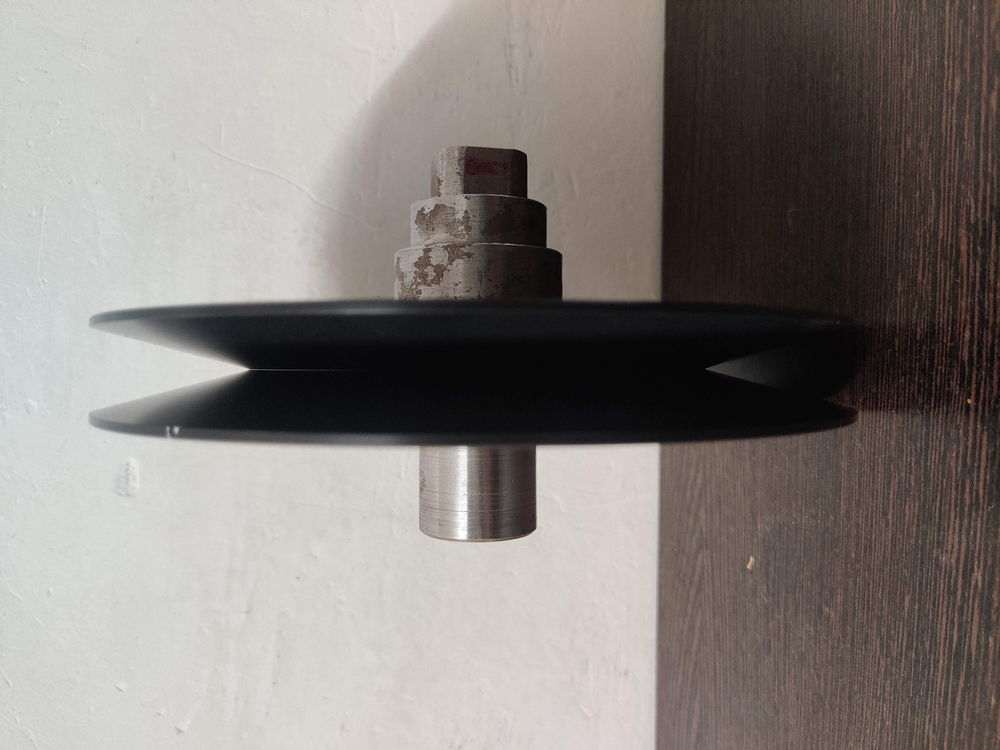

Manual Variable Transmission (MVT) for Electric Vehicle
Academic Project (2021–2022)
Team: Kenilkumar Surani, Harshal Vaholiya, Kishan Viradiya
Funding: Student Startup and Innovation Policy (SSIP) 2021
Project Description
Developed an innovative Manual Variable Transmission (MVT) system designed for electric bikes (single-speed direct drive was common), aiming to improve range, efficiency, acceleration, and hill-climbing performance.
Motivation & Innovation
Single-speed EV bikes operate efficiently only in a narrow speed band. A variable transmission helps the motor stay closer to its optimal zone across changing speeds and loads.
System architecture:
- Two cone pulleys
- V-belt transmission
- Power screw actuators
- Dual BLDC motors controlled via Raspberry Pi (ratio adjustment by speed/load)
Role & Responsibilities
- Lead CAD designer for all MVT components and assembly (SolidWorks)
- Designed and fabricated a dedicated test bench for real-world trials
- Supervised CNC manufacturing in the university workshop
- Led integration and practical testing, including installation on a working e-bike
Technical Features & Validation
- Gear ratio range: 3.1 to 1.4
- Torque & speed variation: 458 – 1021 rpm at constant motor speed
- Max torque output: 91 Nm (lower gears)
- Vehicle speed range: 17 – 60 km/h
- Clutchless operation
Experimental results:
- Up to 40% higher gradeability than direct-drive bikes
- Up to 3× acceleration
- 33% reduction in required motor size for similar performance
- 10% range increase without changing the battery
Project Visuals
MVT Test Platform (SolidWorks renders)


Pulley CAD renders


Manufactured components (photos)

